Qwizard Screenshots
Maker Platform 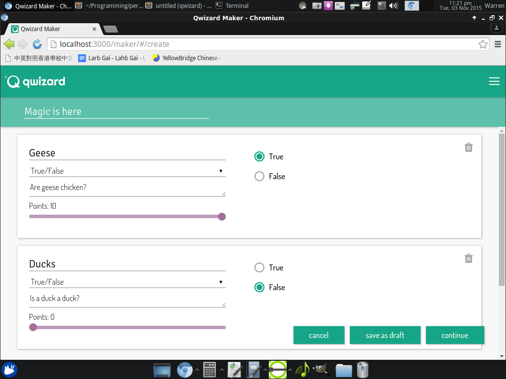 Info Page 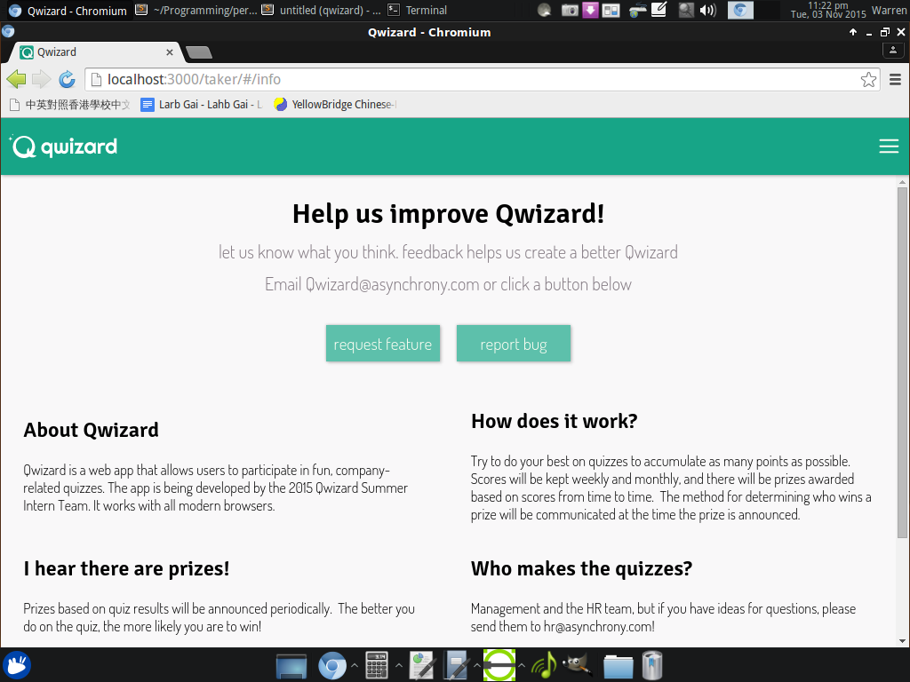 Maker - Multiple Select and Multiple Choice Questions 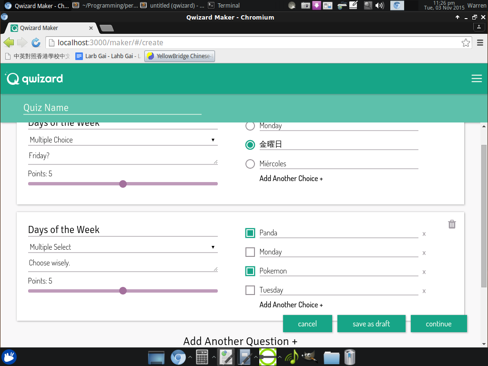 Maker Dashboard 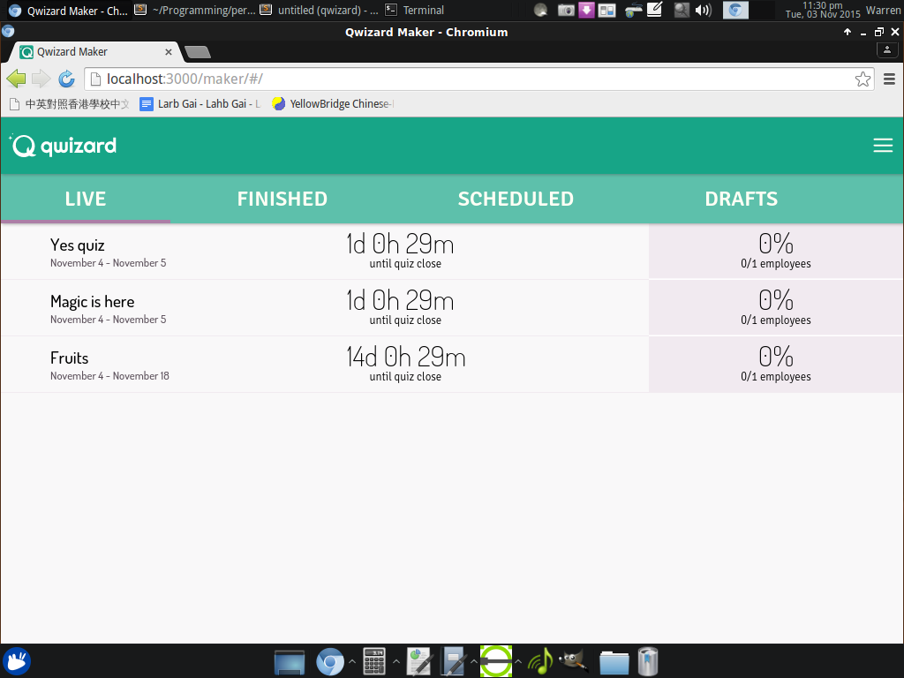 Maker - Matching Question 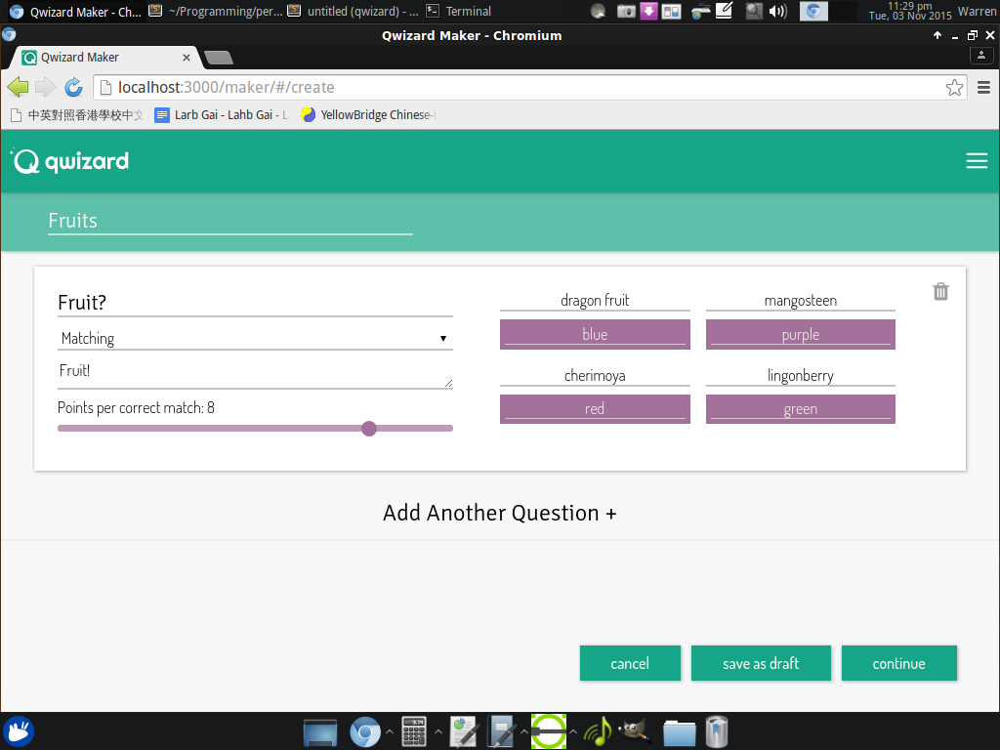 Taker Stats Page 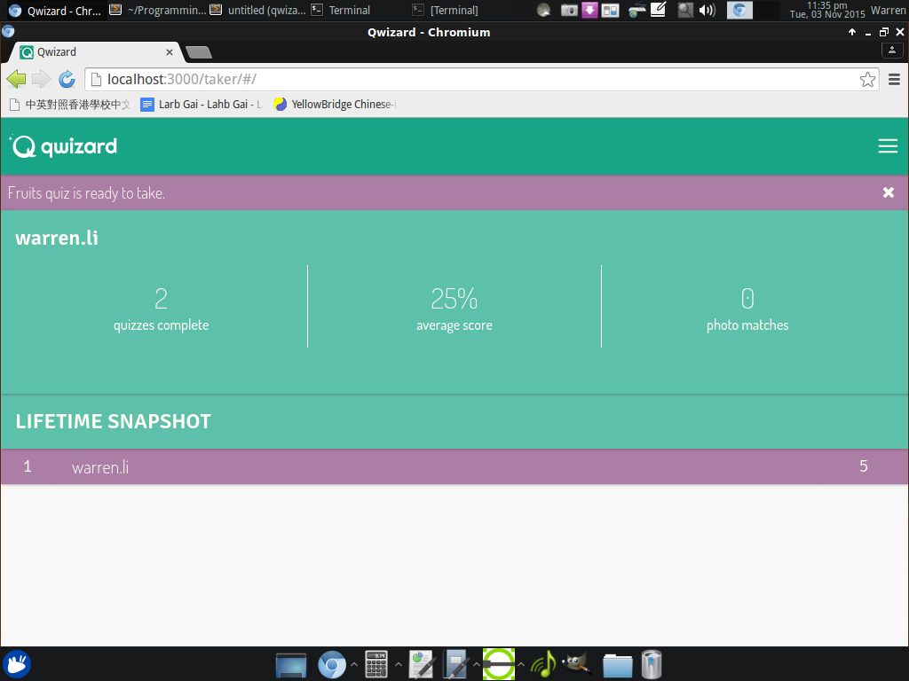 Taker Quiz Page 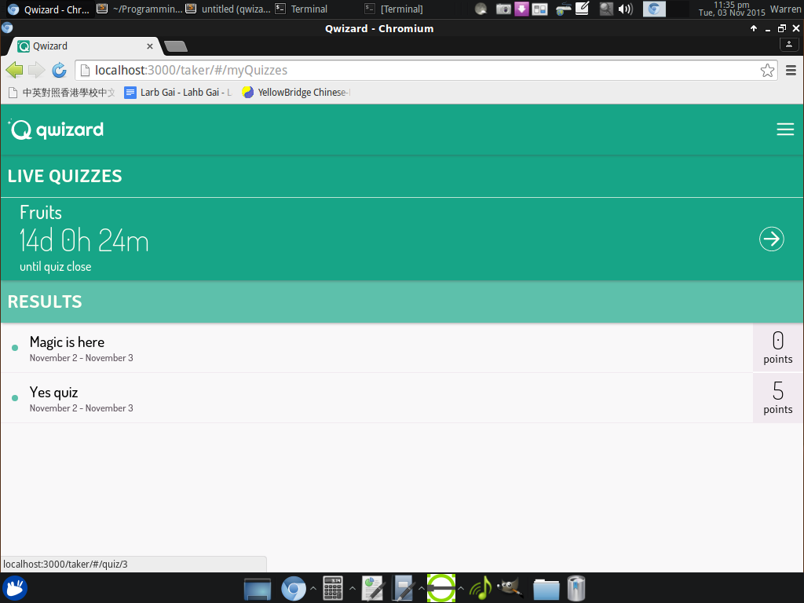 Taker Results Page (Correct Answer) 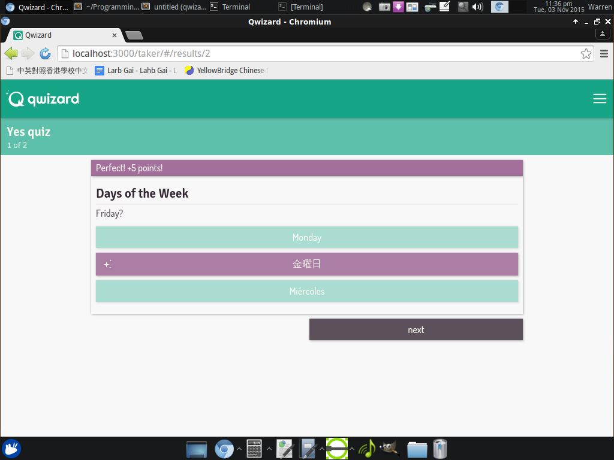 Taker Results Page (Incorrect Answer) 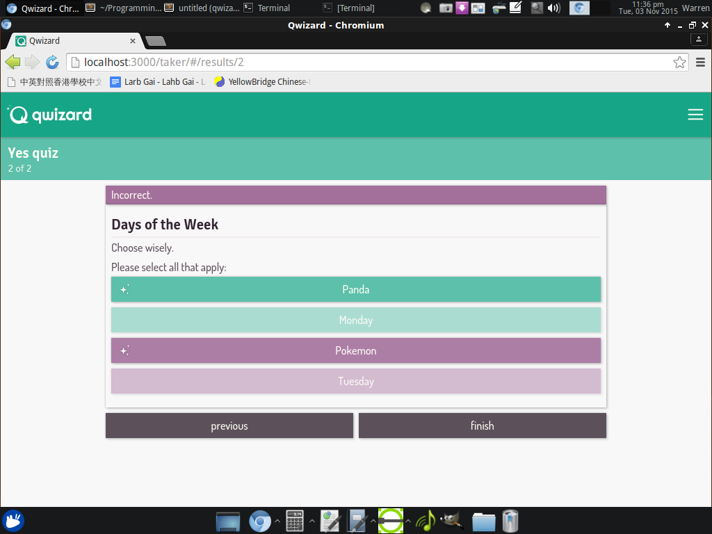 Hamburger Menu 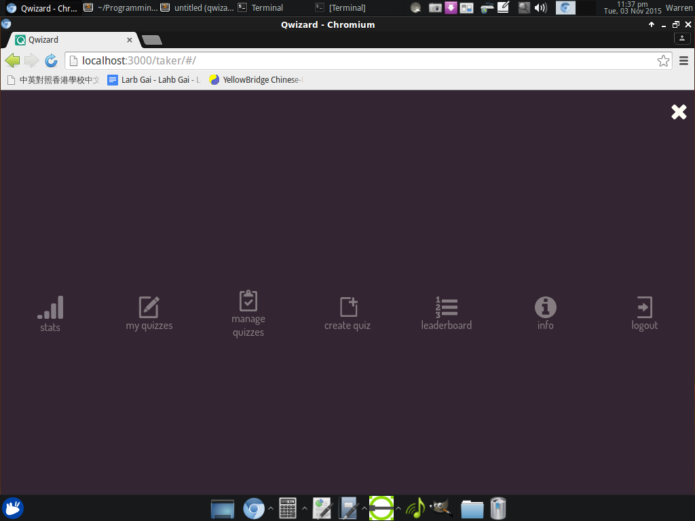 Taker - Matching Question Popup Menu Style
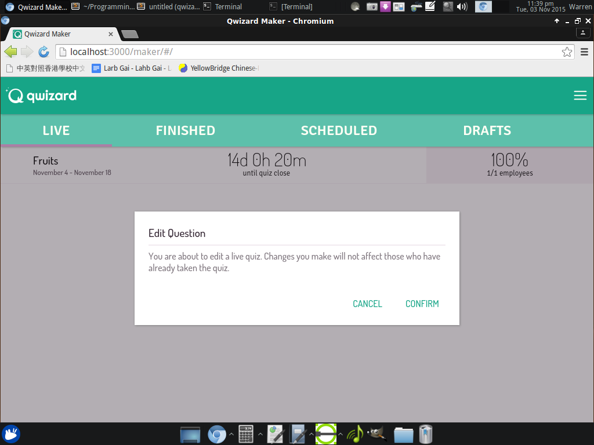
Popup Menu Style
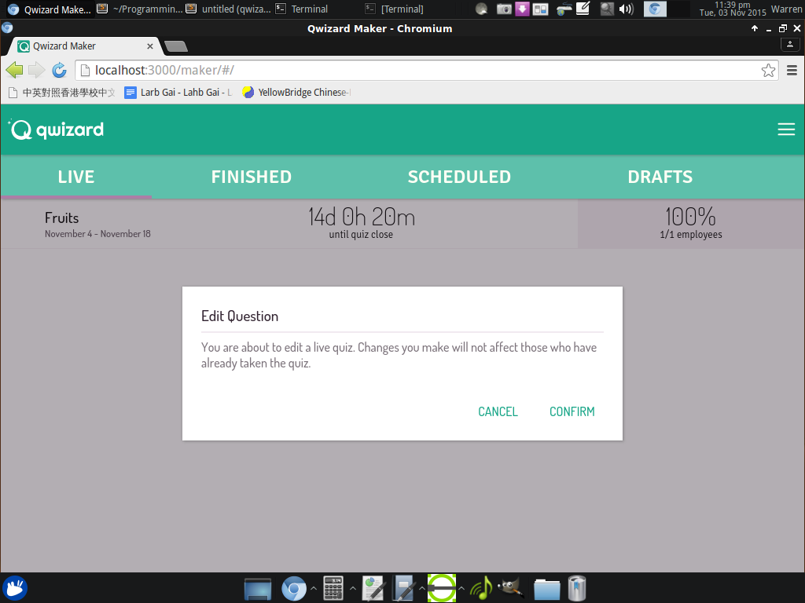